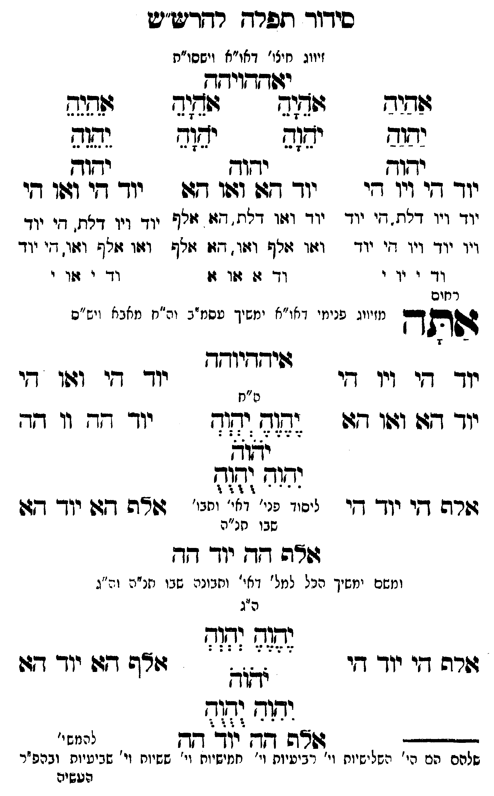

Neue Klartextfassung
[זיווג חיצו' דאו"א וישסו"ת] יאההויהה === טבלה === [טור ימין] אַהַיַהַ יַהַוַהַ יהוה יוד הי ויו הי יוד ויו דלת, הי יוד ויו יוד ויו הי יוד וד י וי י [טור אמצעי] אָהָיָהָ יָהָוָהָ אָהָיָהָ יָהָוָהָ יהוה יוד הא ואו הא יוד ואו דלת, הא אלף ואו אלף ואו, הא אלף וד א או א [טור שמאל] אֵהֵיֵהֵ יֵהֵוֵהֵ יהוה יוד הי ואו הי יוד ויו דלת, הי יוד ואו אלף ואו, הי יוד וד י או י === סוף טבלה === אתה [רחום. מזיווג פנימי דאו"א ימשך עסמ"ב ונרנח"י דמוחא ויש"ס] איההיוהה === טבלה === [טור ימין] יוד הי ויו הי יוד הא ואו הא אלף הי יוד הי [טור אמצעי] [ה"ח] יֶהֶוֶהֶ יְהְוְהְ יֹהֹוֹהֹ יִהִוִהִ יֻהֻוֻהֻ [ליסוד פני' דאצי' ותבו' שבו חב"ד] [טור שמאל] יוד הי ואו הי יוד הה וו הה אלף הא יוד הא === סוף טבלה === אלף הה יוד הה [ומשם ימשיך לכל המל' דאו' ותבונה שבו חו"ח וה"ג.[?]] [ה"ג] === טבלה === [טור ימין] אלף הי יוד הי [טור אמצעי] יֶהֶוֶהֶ יְהְוְהְ יֹהֹוֹהֹ יִהִוִהִ יֻהֻוֻהֻ [טור שמאל] אלף הא יוד הא === סוף טבלה === אלף הה יוד הה
Original gegen neue OCR · Niqqud für Vergleich ausgeblendet
Original
[זיווגK013-001 חיצו' דאו"א וישסו"ת] יאההויהה === טבלה === [טור ימין] אהיה יהוה יהוה יוד הי ויו היK013-002 יוד ויו דלת, היK013-003 יוד ויו ∅K013-004 יוד ויו היK013-005 יוד וד י ויK013-006 י [טור אמצעי] אהיה יהוה אהיה יהוה יהוה יוד הא ואו הא יוד ואו דלת, הא אלף ואו אלף ואו, הא אלףK013-007 וד א או א [טור שמאל] אהיה יהוה יהוה יוד הי ואו הי יוד ויו דלת, הי יוד ואו אלף ואו, הי יודK013-008 וד י אוK013-009 י === סוף טבלה === אתה [רחום. מזיווג פנימיK013-010 דאו"א ימשךK013-011 עסמ"ב ונרנח"י דמוחא ויש"ס] איההיוהה === טבלה === [טור ימין]K013-012 יוד הי ויו היK013-013 יוד הא ואו הא אלף היK013-014 יוד הי [טור אמצעי] [ה"ח] יהוה יהוה יהוה יהוה יהוה [ליסוד פני' דאצי' ותבו'K013-015 שבו חב"ד] [טור שמאל] יוד הי ואו הי יוד הה וו הה אלף הא יוד הא === סוף טבלה === אלף הה יוד הה [ומשםK013-016 ימשיך לכל המל' דאו' ותבונהK013-017 שבו חו"ח וה"ג.] [ה"ג] === טבלה === [טור ימין] אלף הי יוד הי [טור אמצעי] יהוה יהוה יהוה יהוה יהוה [טור שמאל] אלף הא יוד הא === סוף טבלה === אלף הה יוד ההK013-018
OCR · fehlbar
סידור תפרד רדדישיט זיווגK013-001 חיצו' דאו"א וישסו"ת ל יזפדץאדויחךץ ג(שיד ושוב באלש ש9פנש יוב ישב יש[ וש(ש ידוך ידוך ידוד ווךך דקי ורך ד-י יך ד[גד דבפך -דש יוך דקי וזוך ביK013-002 יוד ויו דלח. די יוד יוד ווזו דליז. -:י וזחףK013-003 יוד ויו דצר. דיK013-004 יוד ויו יו- ויו די יוד וצוו זזלש וזזו. דזזי "ואש וזו זזש וזו. זיK013-005 יוד וד י יךK013-006 י ∅K013-007 וד ג: 100 14K013-008 וד י 4ז1K013-009 י רחום ו ודץ ו ז' ו ו לל ה' ו ו חז ' תד נזזיווג פנינזיK013-010 דאו"א ימשיךK013-011 עסמ"ב וה"ח מאב א ויש"ס 4פידשיךחךך יוך דזי ויו די יוך זי וג(ו י ט"חK013-012 יוד דזו וגוו זו (ג(- ונוח יו- -- יו דד יאוש [אא שגרה דיK013-013 יוד די ציני ג . ([- יזני' זורה דג:K013-014 יוד דג:K013-015 שבו קנ"ה זה דד. י(- חך נזשםK013-016 ימשיך הקל למל' דאי' וחגונתK013-017 שבו תנ"יג ו(ג"ג ה"ג זגזף (תזד גשרפ די יוך- י (גו7 יו" [גן יו- דדו יחוג (דז- לשל שדה דד יזד דד נזי' שלהם הם הי' השלישיות וי' [ציעיוק וי' חמישיוח וי' ששיות וי' שביעיות ובהפיר העשיהK013-018